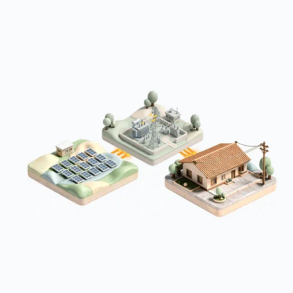

Primeiro acesso
Dos 32.478 usuários analisados, essa parcela avançou além da primeira tela do aplicativo.
Apresentação final · Turma B · 2026.2
Projeto em Ciência de Dados I
Prof. Cristiano de Macedo Neto, M.Sc
Arthur Marcelino de Oliveira
Gustavo Salles Pires
Rodrigo Marcelino de Oliveira

O problema · Sprint I
Dos 32.478 usuários analisados, essa parcela avançou além da primeira tela do aplicativo.
Das mensagens por WhatsApp, cerca de uma em cinco falhou na entrega. Houve clientes até 20 dias sem comunicação.
Foi a inadimplência na primeira fatura entre setembro de 2025 e julho de 2026.
Dos cancelamentos desde 2022, essa parcela foi atribuída à falta de entendimento do produto.
O MVP busca reduzir o cancelamento no primeiro mês e a falta de pagamento da primeira fatura.
Fonte: apresentação institucional Bulbe & Ibmec (set. 2026) e materiais da Etapa 2, conforme registro da Sprint I no projeto.
Escopo do protótipo
Como novo usuário, quero entender como funciona a Bulbe e quais são os requisitos para contratação antes de me cadastrar, para decidir com segurança se o serviço atende às minhas necessidades.
Como cliente recém-contratado, quero consultar os avisos da Bulbe em uma central de comunicações e confirmar meus dados de contato, para não perder informações importantes sobre minha contratação e primeira fatura.
Como cliente recém-contratado, quero visualizar uma estimativa da minha economia e acompanhar quando os descontos começarão, para entender os benefícios do serviço durante a espera pela ativação.
Como cliente ativo, quero acompanhar minha economia mensal e acumulada desde a contratação, para avaliar os benefícios financeiros e decidir se vale a pena continuar utilizando a Bulbe.
Ponto de entrada · Login
No fluxo original, parte das explicações só aparece durante ou após o cadastro, que pode exigir documentos. O protótipo antecipa duas decisões: entender o serviço e estimar a economia.
No aplicativoEscolha “Entenda como você economiza” para iniciar o percurso. “Simulador de Economia” abre a estimativa diretamente.
HU01 · Onboarding educativo
Mariana Costa, 27 anos · Analista administrativa
Mariana mora de aluguel. Antes do cadastro, ela pode descobrir como os créditos chegam à conta e por que o imóvel dispensa obras.
27,1% dos 32.478 usuários analisados avançaram além da primeira tela. Explicar o serviço logo na entrada busca favorecer o cadastro.
No aplicativoAvance de “Conheça a Bulbe” até os requisitos de adesão.
HU03 · Simulador de economia
Fernanda Oliveira, 35 anos · Professora
Fernanda pode simular antes do cadastro e, enquanto aguarda a ativação, consultar quando os descontos começam.
27,7% dos cancelamentos desde 2022 foram atribuídos à falta de entendimento do produto. Esclarecer o benefício busca reduzir desistências já no primeiro mês.
No aplicativoSimule R$ 250,00: a estimativa ilustrativa é de R$ 30,00 por mês e R$ 360,00 por ano.
Ponto de entrada · Área do cliente
A área de faturas situa o cliente na parte logada do protótipo. Ela serve de base para chegar às histórias de comunicação e de acompanhamento da economia.
No aplicativoAbra o menu no canto superior esquerdo e selecione “Central de Comunicações”.
HU02 · Central de comunicações
Ricardo Almeida, 43 anos · Lojista
Mesmo que perca uma mensagem enquanto atende na loja, Ricardo pode recuperar o aviso na central, consultar o canal de atendimento e atualizar seus contatos.
Cerca de 20% das mensagens por WhatsApp falharam na entrega. Manter o telefone atualizado pode evitar falhas por número incorreto.
No aplicativoAbra um aviso e mostre onde Ricardo confirma o telefone.
HU04 · Painel de economia acumulada
Carlos Mendes, 56 anos · Técnico aposentado
Carlos compara meses e consulta o total economizado para decidir se a assinatura vale a pena. Tornar o benefício visível busca reduzir cancelamentos por insatisfação.
32,4% foi a inadimplência da primeira fatura entre set/2025 e jul/2026. Outro objetivo é ajudar o cliente a reconhecer a economia e manter os pagamentos em dia.
No aplicativoMostre os R$ 1.260,72 acumulados em 12 meses e compare dois meses. O histórico exibido é fictício.
Encerramento · Squad 03
Mariana entende o serviço. Fernanda estima o desconto. Ricardo recupera os avisos. Carlos acompanha o resultado mês a mês.
Como avaliar o impacto?Em um piloto, comparar a proporção de clientes que cancelam no primeiro mês e a de primeiras faturas não pagas com as de um grupo que usa o fluxo atual.
Obrigado!